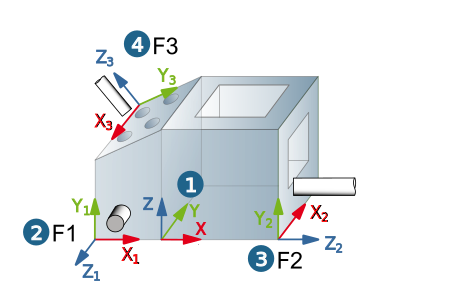
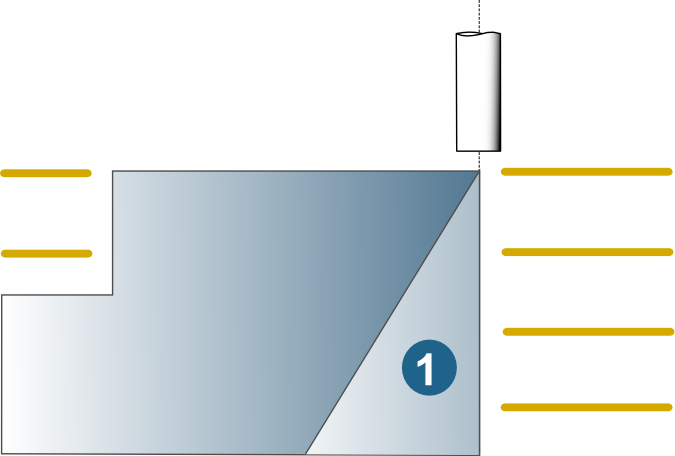

Frame
A frame defines the current machining side and orientation. In multi-axis indexing, a frame has to be defined for each machining side. The assignment of the frame to a job takes place in the job definition.
(1) NC system
(2-4) Frames
|  |
Warning
All frames must be defined before generating the toolpaths. Subsequent movement or rotation will mean having to recalculate all tool paths affected by the change. If the NC system is modified, then the entire job list has to be recalculated. If frames are modified, the affected jobs must be recalculated.
Correct job definition and therefore machining can be achieved only if the frame is in the correct position and orientation for the job, because:
All definitions for the vertical machining area are in relation to the frame (top, bottom), clearance distance, XY plane, horizontal stepover.
The frame shares responsibility for collision checking during machining.
Surfaces that cannot be recognized from the tool axis perspective (1) are not machined.
|  |
In hyperMILL, the first point of a toolpath can also lie below the level given by the height of the machining side in the z+ direction. This generally means below the uppermost point in the model. The positioning movements made by the machine axes up to this first point are not represented in the toolpath, but defined in the postprocessor. An OPEN MIND postprocessor positions the rotational axes first, and only then proceeds to the first point of the toolpath along the linear axes. This needs to be taken into particular consideration during 5X programming, for example, when linking with the → option or when linking triaxial toolpaths with differently oriented frames.
Define frame
-
In the hyperMILL browser, go to the Frames tab and use the New frame shortcut menu or
-

click the icon in the job definition on the Tool dialog page
The Define frame dialog consists of the Definition and General dialog pages. .
The Clamping position and Frame limit dialog pages are also available if you open the dialog via the job list ( → ).